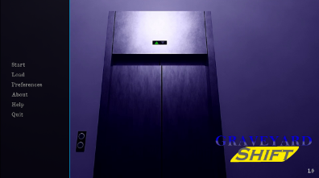
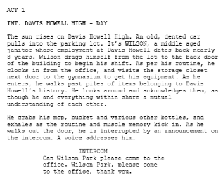
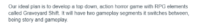
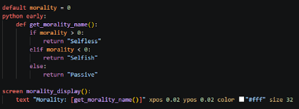
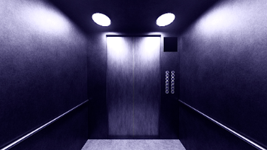

Portfolio
About Me
Bio
I’m a third-year student in SFU’s School of Interactive Arts and Technology(SIAT) Program, with a focus in extended reality(XR) and game design. I’m inspired by the mystery and depth in the interactive experiences I grew up with, and through the knowledge from this program, I want to recreate those feelings with works of my own. A mixed-media workflow of digital and creative skills gives me what I need to translate any of my ideas into a realised environment or story. I have proficiencies in Blender/Maya, JS/Python, Adobe Premiere, and additional skills in sound design/music composition to help make my experiences more immersive and evocative.
Process Analysis

Project 1 - IAT313: Graveyard Shift
Project Requirements
Within this class, I was assigned a semester-wide group project to make a narrative film script, then adapt the script into an interactive experience. For this, I helped create a light horror game in RenPy, called Graveyard Shift.
My Responsibilities
I was responsible for Graveyard Shift’s concept, Acts 1 and 3A of the script's draft, and rewriting that script into a visual novel. I also directed the project, wrote the code for the visual novel portions, created original background music/sound effects, and 3D rendered custom environments using Blender.
Process
Step 1
I first created Graveyard Shift and pitched it to my partner, where it was chosen as our film script. I then wrote acts 1 and 3A of the draft, and when the draft was made, it was decided that the medium of the interactive experience should be a video game.

Step 2
This is when a challenge arose, which was deciding on the game’s genre.
The original idea was a mix of a visual novel,
and an action game when there would be action scenes in the script. I thought that those action portions would be very time-consuming
to create, and only adapted a very small portion of the actual narrative which was the focus of our given requirements.
With this in mind, I suggested that we adapted the script only into a visual novel first, one that's playable from start to finish,
before adding any other additional parts. I believe this went well, as I was able to comfortably finish the narrative sections
in time, with time afterwards for another member to create battle gameplay. I think, if the original idea was used,
the narrative aspects would have been given far less time to finish, and its quality would suffer.

Step 3
The rest of the semester was for game development. I coded the visual novel, directed the art, and make final script changes. Coding the game was done through Python software called RenPy. Through built-in functions for visual novels and the ability to add custom Python scripts, it allowed me to quickly create scenes, sprites, and visual effects with the toolset provided to me, while also letting me add features like a branching path system.

Step 4
When the art assets were being created, other members took real photos for most of the backgrounds. For what we missed, I made custom 3D renders in Blender.

Conclusion
Overall, this project gave me a better understanding and confidence in leading the creation of a large scale interactive project, as well as applying all of my creative/technical talents to create a realized story/world.
Project 2 - IAT 343: Enemy of our Enemy
Project Requirements
My Responsibilities
Process
Step 1
Step 2
Step 3
Step 4
Conclusion